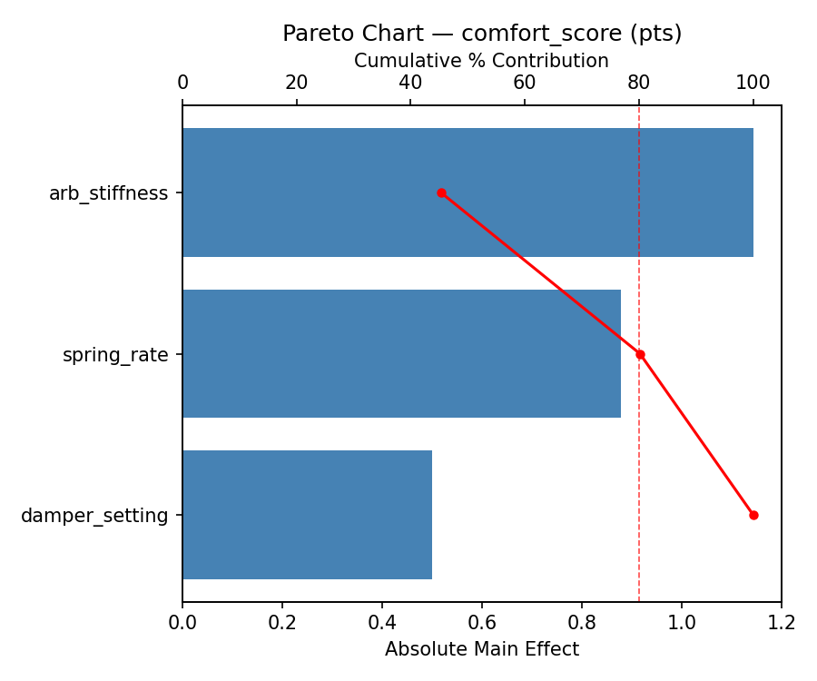
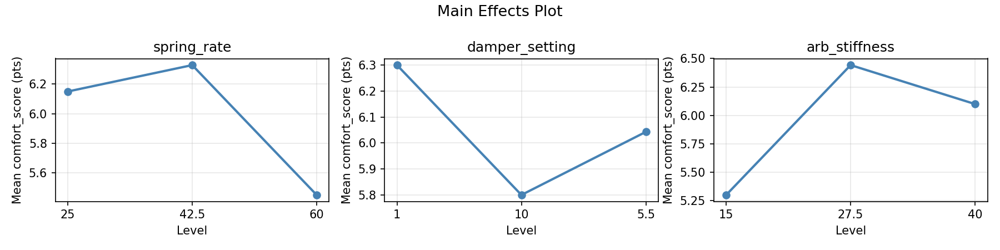
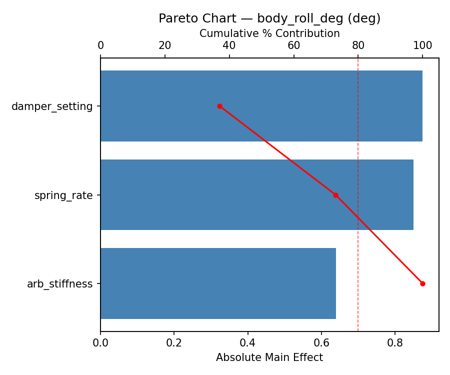
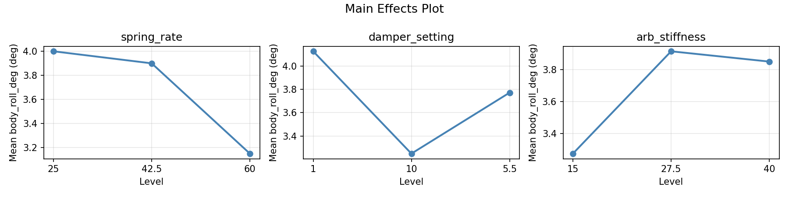
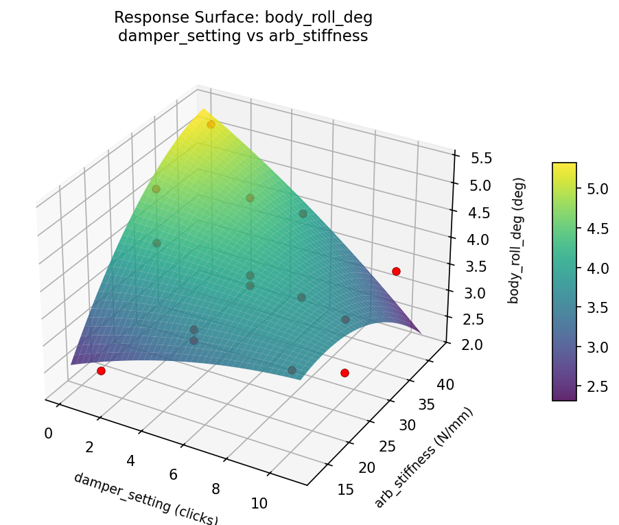
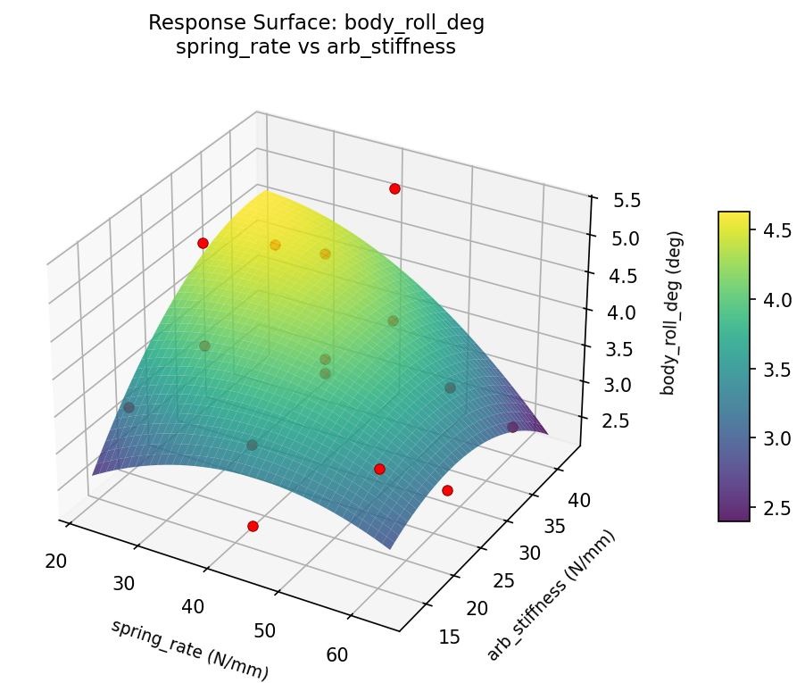
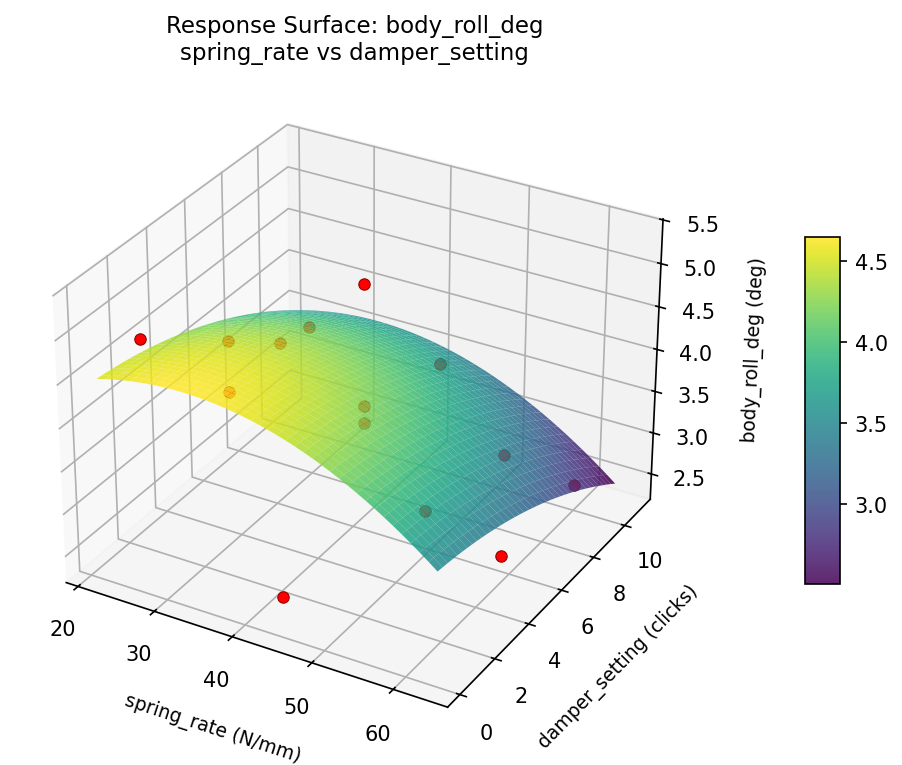
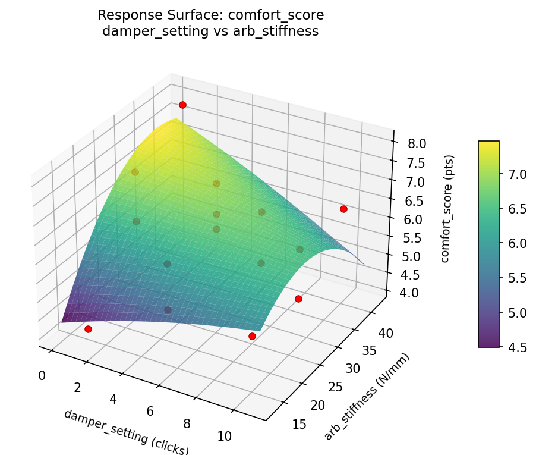
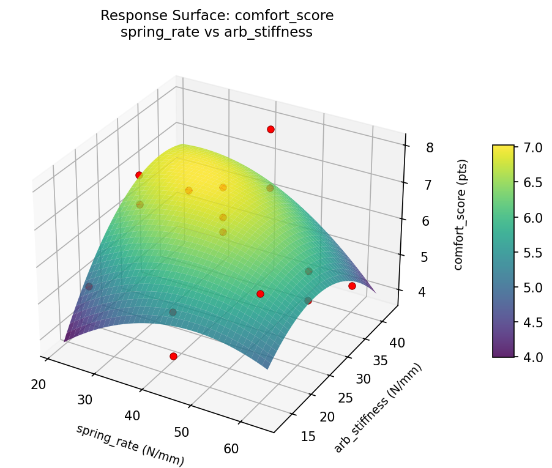
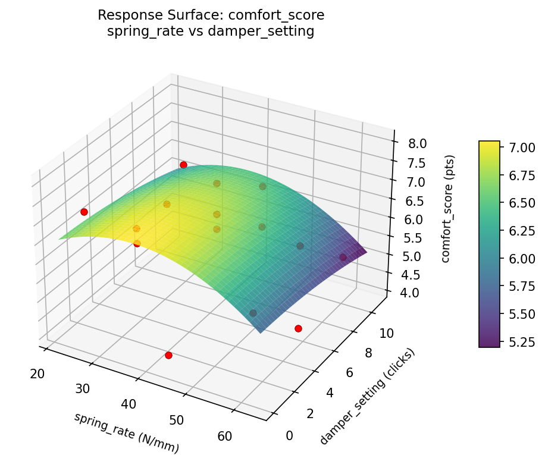

Summary
This experiment investigates suspension comfort tuning. Box-Behnken design to maximize ride comfort and minimize body roll by tuning spring rate, damper setting, and anti-roll bar stiffness.
The design varies 3 factors: spring rate (N/mm), ranging from 25 to 60, damper setting (clicks), ranging from 1 to 10, and arb stiffness (N/mm), ranging from 15 to 40. The goal is to optimize 2 responses: comfort score (pts) (maximize) and body roll deg (deg) (minimize). Fixed conditions held constant across all runs include vehicle weight = 1500kg, tire size = 225/45R17.
A Box-Behnken design was chosen because it efficiently fits quadratic models with 3 continuous factors while avoiding extreme corner combinations — requiring only 15 runs instead of the 8 needed for a full factorial at two levels.
Quadratic response surface models were fitted to capture potential curvature and factor interactions. The RSM contour plots below visualize how pairs of factors jointly affect each response.
Key Findings
For comfort score, the most influential factors were arb stiffness (45.3%), spring rate (34.8%), damper setting (19.8%). The best observed value was 8.0 (at spring rate = 42.5, damper setting = 1, arb stiffness = 40).
For body roll deg, the most influential factors were damper setting (37.0%), spring rate (36.0%), arb stiffness (27.0%). The best observed value was 2.4 (at spring rate = 60, damper setting = 5.5, arb stiffness = 15).
Recommended Next Steps
- Run confirmation experiments at the predicted optimal settings to validate the model.
- Consider whether any fixed factors should be varied in a future study.
Experimental Setup
Factors
| Factor | Low | High | Unit |
|---|
spring_rate | 25 | 60 | N/mm |
damper_setting | 1 | 10 | clicks |
arb_stiffness | 15 | 40 | N/mm |
Fixed: vehicle_weight = 1500kg, tire_size = 225/45R17
Responses
| Response | Direction | Unit |
|---|
comfort_score | ↑ maximize | pts |
body_roll_deg | ↓ minimize | deg |
Configuration
{
"metadata": {
"name": "Suspension Comfort Tuning",
"description": "Box-Behnken design to maximize ride comfort and minimize body roll by tuning spring rate, damper setting, and anti-roll bar stiffness"
},
"factors": [
{
"name": "spring_rate",
"levels": [
"25",
"60"
],
"type": "continuous",
"unit": "N/mm"
},
{
"name": "damper_setting",
"levels": [
"1",
"10"
],
"type": "continuous",
"unit": "clicks"
},
{
"name": "arb_stiffness",
"levels": [
"15",
"40"
],
"type": "continuous",
"unit": "N/mm"
}
],
"fixed_factors": {
"vehicle_weight": "1500kg",
"tire_size": "225/45R17"
},
"responses": [
{
"name": "comfort_score",
"optimize": "maximize",
"unit": "pts"
},
{
"name": "body_roll_deg",
"optimize": "minimize",
"unit": "deg"
}
],
"settings": {
"operation": "box_behnken",
"test_script": "use_cases/123_suspension_tuning/sim.sh"
}
}
Experimental Matrix
The Box-Behnken Design produces 15 runs. Each row is one experiment with specific factor settings.
| Run | spring_rate | damper_setting | arb_stiffness |
|---|
| 1 | 42.5 | 1 | 15 |
| 2 | 42.5 | 5.5 | 27.5 |
| 3 | 60 | 5.5 | 40 |
| 4 | 60 | 5.5 | 15 |
| 5 | 42.5 | 5.5 | 27.5 |
| 6 | 42.5 | 5.5 | 27.5 |
| 7 | 25 | 5.5 | 40 |
| 8 | 60 | 1 | 27.5 |
| 9 | 42.5 | 1 | 40 |
| 10 | 60 | 10 | 27.5 |
| 11 | 25 | 5.5 | 15 |
| 12 | 42.5 | 10 | 40 |
| 13 | 25 | 1 | 27.5 |
| 14 | 25 | 10 | 27.5 |
| 15 | 42.5 | 10 | 15 |
Step-by-Step Workflow
1
Preview the design
$ python doe.py info --config use_cases/123_suspension_tuning/config.json
2
Generate the runner script
$ python doe.py generate --config use_cases/123_suspension_tuning/config.json \
--output use_cases/123_suspension_tuning/results/run.sh --seed 42
3
Execute the experiments
$ bash use_cases/123_suspension_tuning/results/run.sh
4
Analyze results
$ python doe.py analyze --config use_cases/123_suspension_tuning/config.json
5
Get optimization recommendations
$ python doe.py optimize --config use_cases/123_suspension_tuning/config.json
6
Generate the HTML report
$ python doe.py report --config use_cases/123_suspension_tuning/config.json \
--output use_cases/123_suspension_tuning/results/report.html
Features Exercised
| Feature | Value |
|---|
| Design type | box_behnken |
| Factor types | continuous (all 3) |
| Arg style | double-dash |
| Responses | 2 (comfort_score ↑, body_roll_deg ↓) |
| Total runs | 15 |
Analysis Results
Generated from actual experiment runs using the DOE Helper Tool.
Response: comfort_score
Top factors: arb_stiffness (45.3%), spring_rate (34.8%), damper_setting (19.8%).
Pareto Chart

Main Effects Plot

Response: body_roll_deg
Top factors: damper_setting (37.0%), spring_rate (36.0%), arb_stiffness (27.0%).
Pareto Chart

Main Effects Plot

Response Surface Plots
3D surfaces fitted with quadratic RSM. Red dots are observed data points.
body roll deg damper setting vs arb stiffness

body roll deg spring rate vs arb stiffness

body roll deg spring rate vs damper setting

comfort score damper setting vs arb stiffness

comfort score spring rate vs arb stiffness

comfort score spring rate vs damper setting

Full Analysis Output
RSM surface: rsm_comfort_score_spring_rate_vs_damper_setting.png
RSM surface: rsm_comfort_score_spring_rate_vs_arb_stiffness.png
RSM surface: rsm_comfort_score_damper_setting_vs_arb_stiffness.png
RSM surface: rsm_body_roll_deg_spring_rate_vs_damper_setting.png
RSM surface: rsm_body_roll_deg_spring_rate_vs_arb_stiffness.png
RSM surface: rsm_body_roll_deg_damper_setting_vs_arb_stiffness.png
=== Main Effects: comfort_score ===
Factor Effect Std Error % Contribution
--------------------------------------------------------------
arb_stiffness 1.1429 0.2862 45.3%
spring_rate 0.8786 0.2862 34.8%
damper_setting 0.5000 0.2862 19.8%
=== Summary Statistics: comfort_score ===
spring_rate:
Level N Mean Std Min Max
------------------------------------------------------------
25 4 6.1500 0.8347 5.3000 7.2000
42.5 7 6.3286 1.3124 4.1000 8.0000
60 4 5.4500 0.9574 4.3000 6.5000
damper_setting:
Level N Mean Std Min Max
------------------------------------------------------------
1 4 6.3000 1.7029 4.1000 8.0000
10 4 5.8000 0.6976 5.1000 6.4000
5.5 7 6.0429 1.0438 4.3000 7.5000
arb_stiffness:
Level N Mean Std Min Max
------------------------------------------------------------
15 4 5.3000 0.9798 4.1000 6.5000
27.5 7 6.4429 0.8039 5.1000 7.5000
40 4 6.1000 1.5384 4.3000 8.0000
=== Main Effects: body_roll_deg ===
Factor Effect Std Error % Contribution
--------------------------------------------------------------
damper_setting 0.8750 0.2308 37.0%
spring_rate 0.8500 0.2308 36.0%
arb_stiffness 0.6393 0.2308 27.0%
=== Summary Statistics: body_roll_deg ===
spring_rate:
Level N Mean Std Min Max
------------------------------------------------------------
25 4 4.0000 0.6633 3.5000 4.9000
42.5 7 3.9000 1.0263 2.4000 5.3000
60 4 3.1500 0.7550 2.5000 3.9000
damper_setting:
Level N Mean Std Min Max
------------------------------------------------------------
1 4 4.1250 1.2920 2.4000 5.3000
10 4 3.2500 0.5000 2.5000 3.5000
5.5 7 3.7714 0.8036 2.5000 5.2000
arb_stiffness:
Level N Mean Std Min Max
------------------------------------------------------------
15 4 3.2750 0.5909 2.4000 3.7000
27.5 7 3.9143 0.9045 2.5000 5.2000
40 4 3.8500 1.1705 2.5000 5.3000
Pareto chart (comfort_score): use_cases/123_suspension_tuning/results/analysis/pareto_comfort_score.png
Pareto chart (body_roll_deg): use_cases/123_suspension_tuning/results/analysis/pareto_body_roll_deg.png
Main effects (comfort_score): use_cases/123_suspension_tuning/results/analysis/main_effects_comfort_score.png
Main effects (body_roll_deg): use_cases/123_suspension_tuning/results/analysis/main_effects_body_roll_deg.png
Optimization Recommendations
=== Optimization: comfort_score ===
Direction: maximize
Best observed run: #13
spring_rate = 42.5
damper_setting = 1
arb_stiffness = 40
Value: 8.0
RSM Model (linear, R² = 0.4502, Adj R² = 0.3003):
Coefficients:
intercept +6.0467
spring_rate -0.0875
damper_setting -0.8500
arb_stiffness +0.4875
RSM Model (quadratic, R² = 0.8035, Adj R² = 0.4498):
Coefficients:
intercept +6.1333
spring_rate -0.0875
damper_setting -0.8500
arb_stiffness +0.4875
spring_rate*damper_setting -0.9000
spring_rate*arb_stiffness +0.7750
damper_setting*arb_stiffness +0.0500
spring_rate^2 -0.2292
damper_setting^2 +0.1958
arb_stiffness^2 -0.1292
Curvature analysis:
spring_rate coef=-0.2292 concave (has a maximum)
damper_setting coef=+0.1958 convex (has a minimum)
arb_stiffness coef=-0.1292 concave (has a maximum)
Notable interactions:
spring_rate*damper_setting coef=-0.9000 (antagonistic)
spring_rate*arb_stiffness coef=+0.7750 (synergistic)
Predicted optimum (from quadratic model):
spring_rate = 60
damper_setting = 1
arb_stiffness = 27.5
Predicted value: 7.7625
Model quality: Good fit — general trends are captured, some noise remains.
Factor importance:
1. damper_setting (effect: 1.7, contribution: 56.7%)
2. arb_stiffness (effect: 1.0, contribution: 32.5%)
3. spring_rate (effect: 0.3, contribution: 10.7%)
=== Optimization: body_roll_deg ===
Direction: minimize
Best observed run: #10
spring_rate = 60
damper_setting = 5.5
arb_stiffness = 15
Value: 2.4
RSM Model (linear, R² = 0.6214, Adj R² = 0.5181):
Coefficients:
intercept +3.7267
spring_rate -0.0875
damper_setting -0.8375
arb_stiffness +0.4000
RSM Model (quadratic, R² = 0.9152, Adj R² = 0.7625):
Coefficients:
intercept +3.7333
spring_rate -0.0875
damper_setting -0.8375
arb_stiffness +0.4000
spring_rate*damper_setting -0.7250
spring_rate*arb_stiffness +0.2500
damper_setting*arb_stiffness +0.1500
spring_rate^2 -0.3292
damper_setting^2 +0.3208
arb_stiffness^2 -0.0042
Curvature analysis:
spring_rate coef=-0.3292 concave (has a maximum)
damper_setting coef=+0.3208 convex (has a minimum)
arb_stiffness coef=-0.0042 negligible curvature
Notable interactions:
spring_rate*damper_setting coef=-0.7250 (antagonistic)
Predicted optimum (from quadratic model):
spring_rate = 60
damper_setting = 1
arb_stiffness = 27.5
Predicted value: 5.2000
Model quality: Excellent fit — surface predictions are reliable.
Factor importance:
1. damper_setting (effect: 1.7, contribution: 57.5%)
2. arb_stiffness (effect: 0.8, contribution: 27.5%)
3. spring_rate (effect: 0.4, contribution: 15.1%)